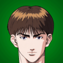
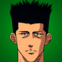
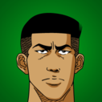

Equipos
Integrantes
Ryonan
| Nombre | Posición | Dorsal |
|---|---|---|
| Akira Sendoh | Ala-Pivot | # 7 |
| Jun Uozumi | Centro | # 4 |
| Hiroaki Koshino | Escolta | # 6 |
| Fukuda Kicchou | Ala-Pivot | # 13 |
| Ikegami Ryoji | Alero | # 5 |
| Moichi Taoka | Entrenador |
Shohoku
| Nombre | Posición | Dorsal |
|---|---|---|
| Hanamichi Sakuragi | Ala-Pivot | # 10 |
| Tekenori Akagi | Centro | # 4 |
| Kaede Rukawa | Alero | # 11 |
| Ryota Miyagi | Base | # 7 |
| Hisashi Mitsui | Escolta | # 14 |
| Kiminobu Kogure | Alero | # 5 |
| Mitsuyoshi Anzai | Entrenador |
Kainan
| Nombre | Posición | Dorsal |
|---|---|---|
| Shinichi Maki | Base | # 4 |
| Soichiro Jin | Escolta | # 6 |
| Kazuma Takasago | Centro | # 5 |
| Nobunaga Kiyota | Alero | # 10 |
| Yoshinori Miyawasu | Base | # 15 |
| Riki Takato | Entrenador |
Shoyo
| Nombre | Posición | Dorsal |
|---|---|---|
| Kenji Fujima | Base | # 4 |
| Kazushi Hasegawa | Escolta | # 6 |
| Toru Hanagata | Centro | # 5 |
| Shoichi Takano | Alero | # 8 |
| Mitsuru Nagano | Ala-Pivot | # 7 |
| Kenji Fujima | Entrenador |
Sannoh
| Nombre | Posición | Dorsal |
|---|---|---|
| Kazunari Fukatsu | Centro | # 4 |
| Minoru Matsumoto | Escolta | # 6 |
| Masashi Kawata | Alero | # 7 |
| Masahiro Nobe | Ala-Pivot | # 5 |
| Eiji Sawakita | Alero | # 9 |
| Goro Domoto | Entrenador |
ICONOS - PREPARATORIA SHOYO

Kenji Fujima
Toru Hanagata

Kazushi Hasegawa
